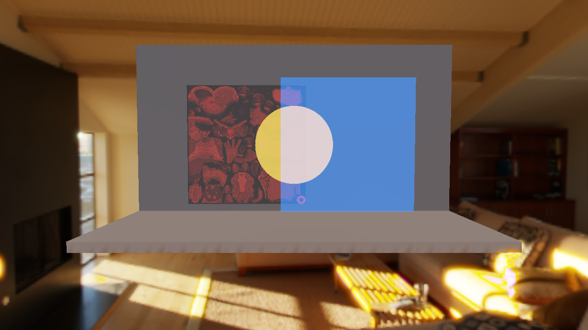
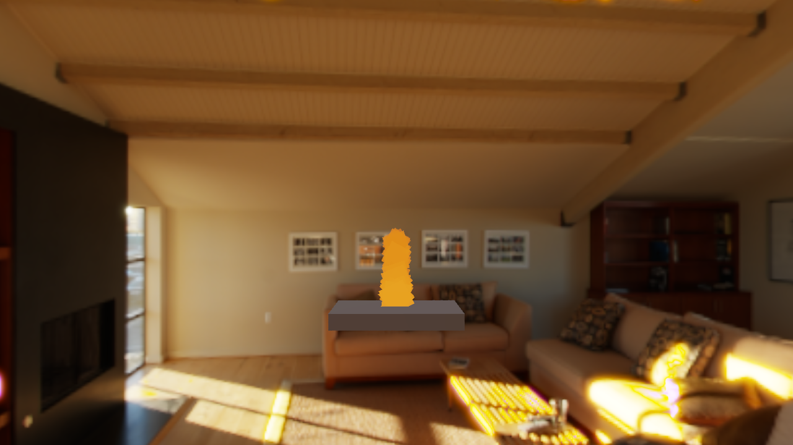

T4/T5 Review Fix Verification
Passed: formatting, Clippy, report/runner checks, workspace tests, release build, and two targeted launcher captures.
Outstanding gate: verify-module-health.sh still fails. Thirty baseline entries already exceeded their recorded line count at the reviewed HEAD; this work also increases some baseline-tracked files. No Rust file exceeds 500 lines. The baseline was not changed; module-health cleanup remains incomplete.
Fixes covered: mixed mesh/particle back-to-front ordering; transparent albedo texture sampling and alpha cutoff; explicit Transparent → Water graph dependency; one emitter per fire/smoke/dust acceptance scene; removal of production unwraps in the transparent pipeline.
Runtime captures


Automated checks
cargo test --workspace: engine 281, launcher 36, and all integration/doc tests passed.cargo clippy --workspace --all-targets -- -D warnings: passed.cargo build -p aether-launcher --release: passed../scripts/verify-ci.sh: all checks through workspace tests passed; stopped at the known module-health baseline drift.